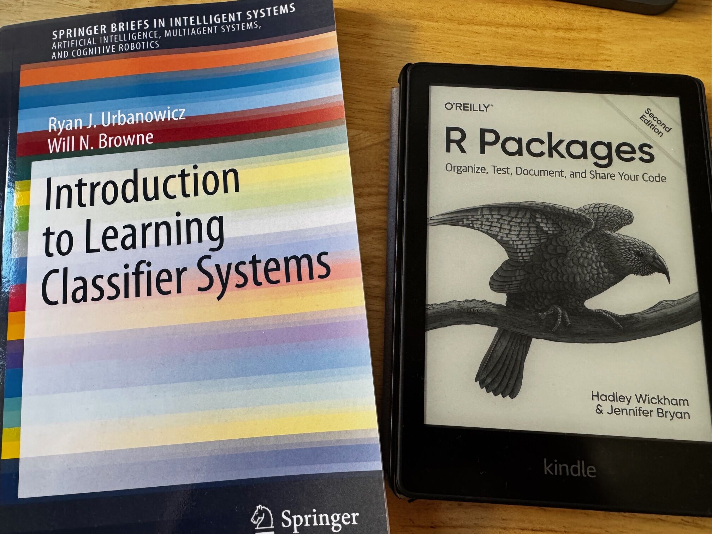
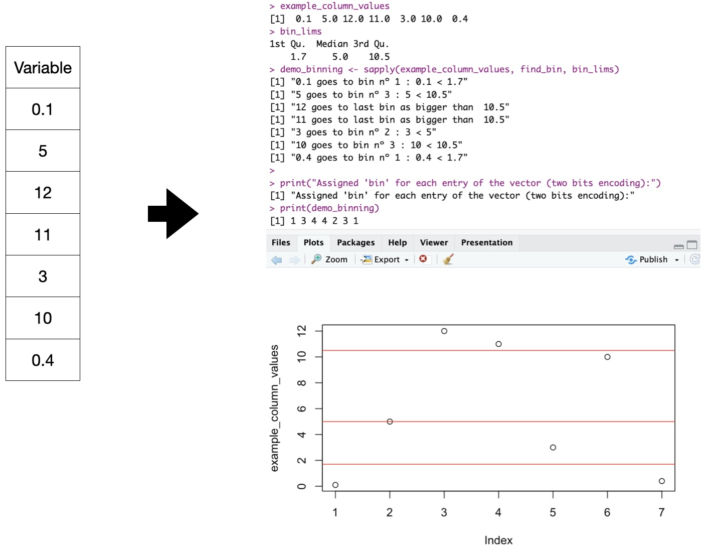

RLCS: A (shorter) Introduction
Interpretable, Symbolic Machine Learning
An issue with “AI”: explainability
Let’s call it Machine Learning. As of today:
- Mostly Neural networks, DNN, and that’s all black boxes
There are ways around that.
An issue with “AI”: explainability
Interpretability/Explainability:
Model-specific Methods (…)
Local Model-Agnostic Methods: Counterfactuals, Local Surrogate Model (LIME), Shapley Value, Shapley Additive exPlanation (SHAP)…
Global Model-Agnostic Methods: Partial Dependence Plot (PDP), Accumulated Local Effects (ALE), H-Statistic, Surrogate Models…
Interpretable Models: Trees, LM/GLM, KNN, and rule-based
Recommended reading: Molnar C. (2022) “Interpretable Machine Learning”
A new R package

John H. Holland proposed an algorithm with the Cognitive System One program (1976). Later, people came up with variations… Today we focus on Michigan-style LCS.
A preview
Can you guess the “rule”?
A Data Mining Exercise with RLCS
Did you guess right?
> demo_params <- RLCS_hyperparameters(n_epochs = 280, deletion_trigger = 40, deletion_threshold = 0.9)
> rlcs_model1 <- rlcs_train_sl(demo_env1, demo_params, NULL, F)
[1] "Epoch: 40 Progress Exposure: 1280 Classifiers Count: 14"
[1] "Epoch: 80 Progress Exposure: 2560 Classifiers Count: 8"
(...)
[1] "Epoch: 280 Progress Exposure: 8960 Classifiers Count: 2"Learning rules as model(s)
if A & NOT(B) then Class=X
if D then Class=Y
“Human-readable”, “interpretable”, good for:
Mitigating bias(es) (in training data, at least)
Increased trust (justifying decisions)
Learning about the data (data mining), better decisions, regulatory compliance, ethical/legal matters, possible adversarial attack robustness…
Interlude: Get the package
Download and install RLCS
https://github.com/kaizen-R/RLCS
To get the package from GitHub:
Run your first test
Binary input: Example
Neural Networks accept numerical input. Currently, RLCS accepts Binary strings.
Rosetta Stone “binning” for numerical variables (2 bits explanation)
What can RLCS do?
Data Mining
We’ve seen simple examples. A few more are included with the package, have a look at the demos.
Supervised Learning: Iris
Supervised Learning: Iris

visualizing one classifier - iris
Supervised Learning: Images Classifier
[1] "Accuracy: 0.98"
> table(test_mnist_bin01_49b[, c("class", "predicted")])
predicted
class 0 1 rlcs_no_match
0 1716 65 5
1 5 2008 0
>
> ## Training time on 800 samples:
> print(t_end - t_start)
Time difference of 1.937979 mins!! Magic Trick: Parallelism: By splitting training data, and then consolidating sub-models! (Take that, Neural network :D)
Supervised Learning: Images Classifier

Reinforcement Learning, TOO!
This example is in fact not learning probability distributions. And it uses reward-shaping. But it works!

Then again
Hyperparameters tuning is not easy, and impacts performance. Large Populations of rules are in fact hard to interpret, in spite of being readable.
This is all work in progress. I plan to try and make it into a CRAN Package. (So: document more, write more tests, reorganize functions…) I will keep working on better mechanics (fitness sharing, deletion, etc.), parallel processing, help with encoding/decoding, etc.